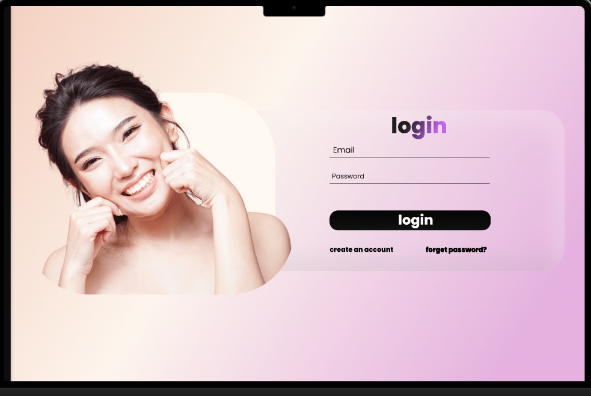
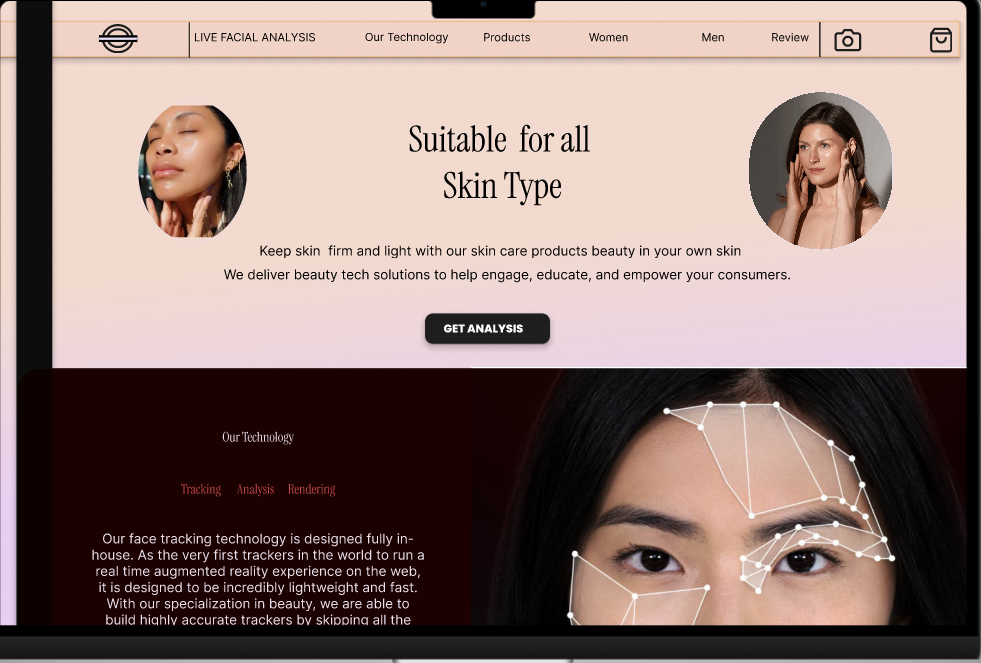
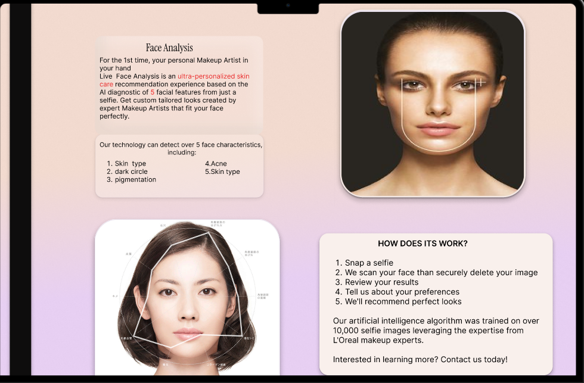
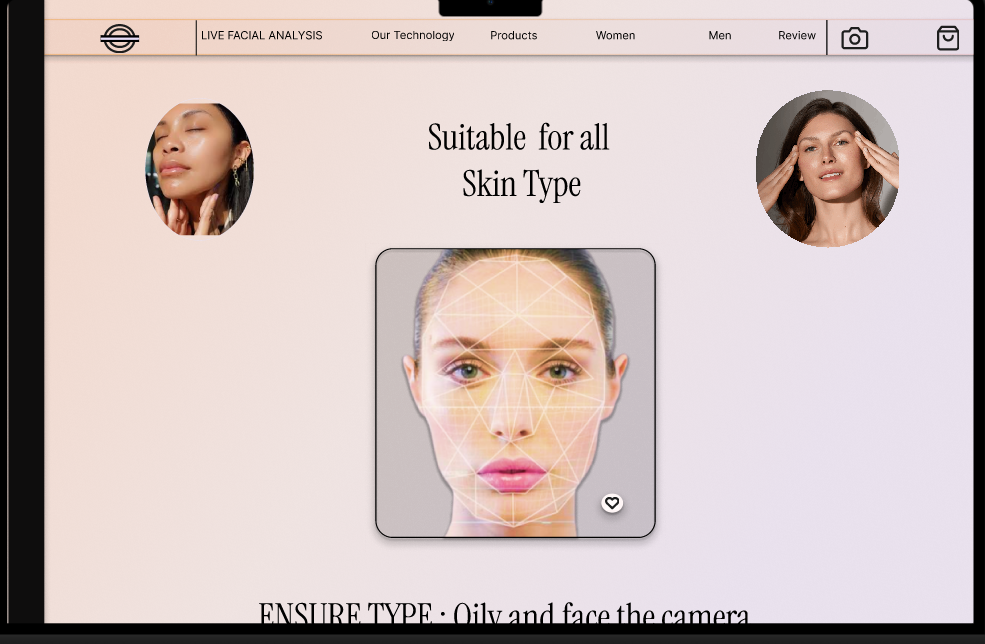
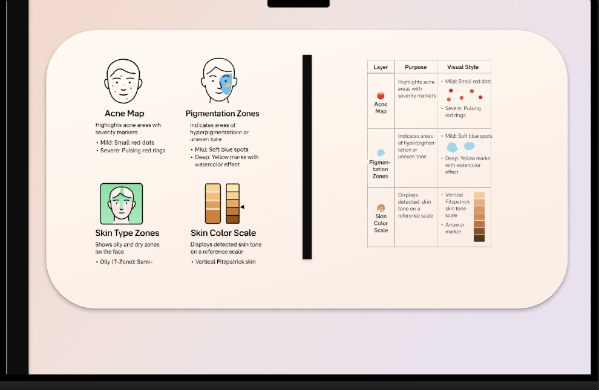

Screenshots or Mockups

Login Page: Clean and inviting interface for user authentication.

Homepage & Value Proposition: Highlights key benefits and guides user to analysis.

Technology Explanation: Detail of the AI/ML process and "How It Works" steps.

Live Analysis Interface: Real-time camera feed with facial tracking and user prompts.

Analysis Results & Legend: (Crucial) Visual overlays showing acne, pigmentation, skin type, and tone as detected by ML.

thank you .